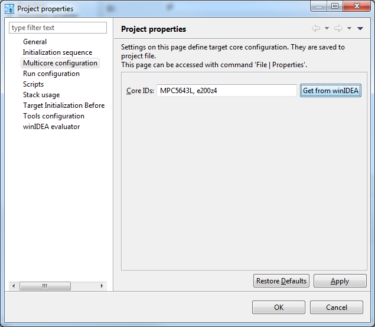
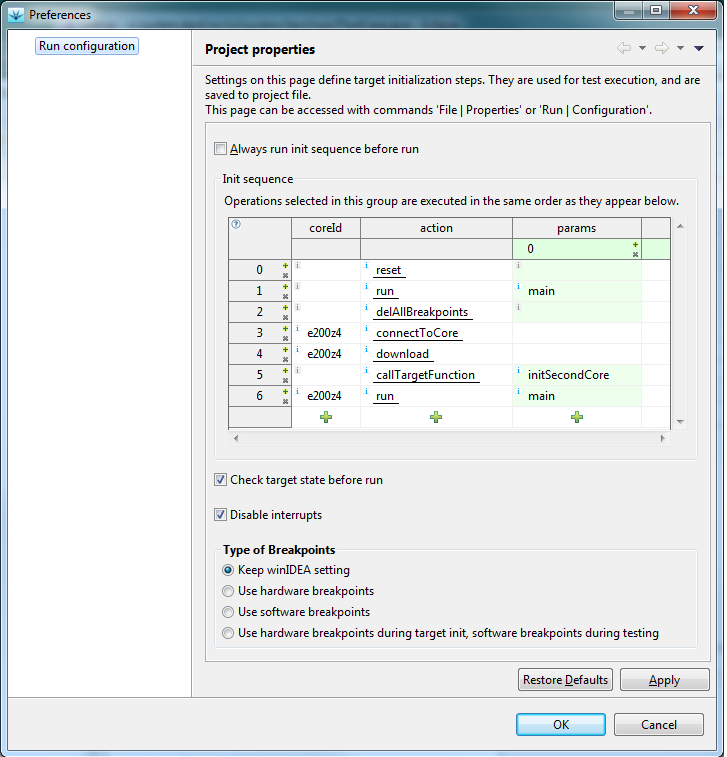
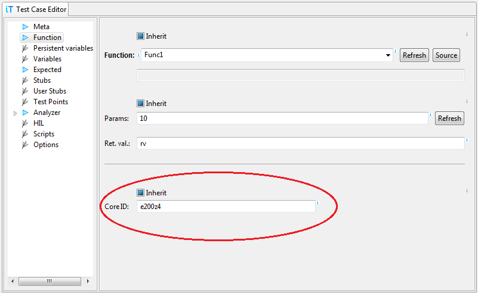

Multi-core testing
With multi-core targets a need to run tests on a specific core
appears. To be able to utilize multi-core testing, we must first
properly configure testIDEA.
Configure core IDs
Each core is identified by its index. To make this identification
more user friendly, we can assign name to each core in project
properties (File | Properties | Multicore
configuration). Comma separated list contains list of core
IDs, where the first item refers to core with index 0 or primary
core, the next item refers to core with index 1, ...
Button Get from winIDEA reads core IDs from winIDEA. Names
will be the same as found in winIDEA
menu . It is a
convenience feature, but not mandatory - names of cores in
testIDEA may differ from those in winIDEA, so that we can use the
same iyaml file when our code is compiled and tested on different
targets.

If this field is empty, we can not specify test IDs in test cases.
Initialization sequence
With more than one core the initialization sequence becomes more
complex. For each core we must make sure that:
- testIDEA connects to core
- the code is downloaded and winIDEA knows application symbols
- core is active (released from reset)
- startup code for the core is executed (for example run until
main()), so that stack is initialized
See also the screenshot below.
The recommended approach for init sequence configuration is manual
initialization of winIDEAs for all cores we want to test. During
this operation we write down all actions, for example: Download,
Run until main(), Debug | Core, ... When done, we enter this
sequence into Run configuration dialog (Run | Run
configuration). Example for target with two cores is shown in
the image below. Empty field for core ID refers to primary core
(core with index 0).

Available actions and their parameters are described in table
tool-tip (hover the question mark icon in the top left corner of
the Init sequence table).
Assign core IDs to test cases
The final step is defining core ID for each test case. Since list
of functions given by content assist depends on core selection, it
is a good idea to select core ID first. If core ID field is left
empty, primary core is assumed.
